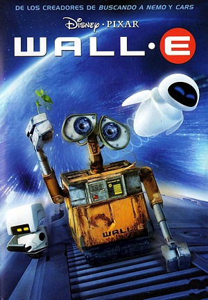
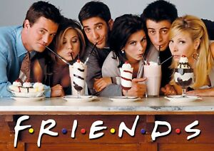
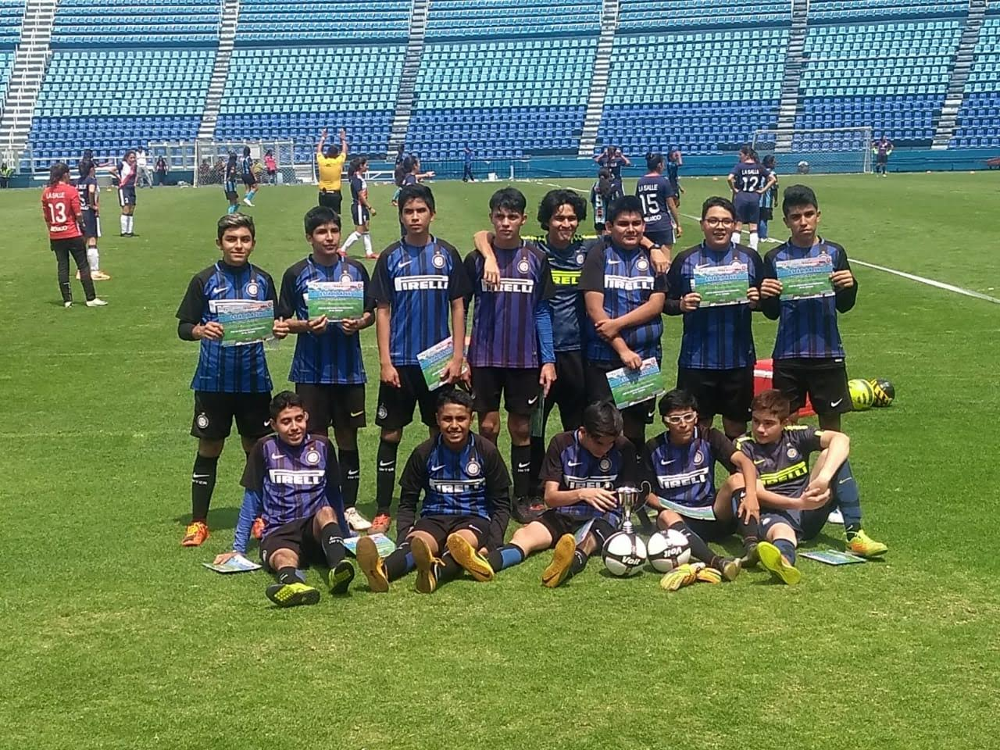
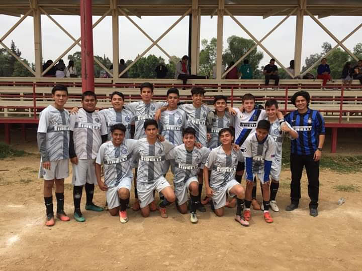

Para empezar quiero dar un pequeño resumen sobre quien soy y asi me van conociendo.
Mi nombre es Joaquin Ignacio Vilchis Cuevas, todos me dicen Nacho. Tengo 17 años y soy estudiante en Voca 9.
Y pensaran que con la escuela pues no me da tiempo para hacer otras cosas jaja, pero cuando tengo la oportunidad me encanta ver peliculas o series, escuchar musica, y practico deportes.
Y pues bueno como ultimo me gustaria dejarles un pequeño video que hice de mi vida, nomas para completar jajaja.
Mi gusto por las peliculas es gracias a mi papá que tambien es un fanatico, antes de la pandemia ibamos al cine muy seguido.
Aunque mis gustos son muy distintos a los de mi papá, prefiero la comedia o ciencia ficcion y si de vez en cuando algo de drama pero es que si llegan a haber peliculas muy aburridas.
Mis peliculas favoritas son: Los miserables, WALL-E, Avengers: Endgame, y la mas reciente Justice League de Zack Snyder.

Personlamente prefiero las series de todo tipo, pienso que es la mejor manera de entender lo que estas viendo.
Por ejemplo cuando son de superheroes puedes ver una mejor manera del desarrollo del personaje.
He visto de todo tipo superheroes, accion, drama, comedia, pero mi serie favorita por siempre sera FRIENDS, creo que es de las mejores series que existen por todo lo que conlleva verla.

Bueno aquí mis gustos si no son los mejores jaja.
La musica que mas escucho es regueton, trap, trap argentino, y rap. Si llego a escuchar cualquier tipo de musica pero no soy fan.
Me gusta demasiado el rap mexicano, pero no del que habla de drogas y asi, prefiero el tipo de rap que canta MCDavo, GeraMx, Nanpa, Santa Fe.
Y el trap pues porque veo batallas de rap y de ahi fui conociendo a muchos que me gustan. Y pues mis cantantes favoritos son Bad Bunny, Duki, JBalvin.
Mis papas siempre me enseñaron el gusto al deporte, y a lo largo de mi vida eh practicado: futbol, basquetbol, box y natación.
Empece en la primaria un par de años jugando basquet, y despues jugue futbol y al mismo tiempo iba a natacion. Y el mas reciente es box porque se practica enfrente de mi casa.
En basquet nunca llegue a ganar nada, aunque estuve muy cerca. En futbol si gane 3 campeonatos, 1 copa y 4 subcampeonatos.

